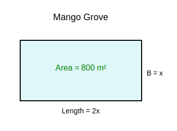
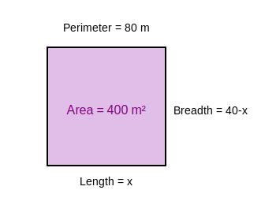

1. Find the nature of the roots of the following quadratic equations. If the real roots
exist, find them:
(i) 2x² – 3x + 5 = 0
Determining coefficients: a = 2, b = -3, c = 5
Discriminant D = b² - 4ac
D = (-3)² - 4(2)(5)
D = 9 - 40
D = -31
Since D < 0, no real roots exist.
No real roots.
(ii) 3x² – 4√3x + 4 = 0
Determining coefficients: a = 3, b = -4√3, c = 4
Discriminant D = b² - 4ac
D = (-4√3)² - 4(3)(4)
D = 16(3) - 48
D = 48 - 48 = 0
Since D = 0, two equal, real roots exist.
Roots are given by x = -b2a
x = -(-4√3)2(3)
x = 4√36
Simplifying: x = 2√33
Roots are 2√33, 2√33.
(iii) 2x² – 6x + 3 = 0
Determining coefficients: a = 2, b = -6, c = 3
Discriminant D = b² - 4ac
D = (-6)² - 4(2)(3)
D = 36 - 24 = 12
Since D > 0, two distinct real roots exist.
Roots x = -b ± √D2a
x = -(-6) ± √122(2)
x = 6 ± 2√34
Divide numerator and denominator by 2:
x = 3 ± √32
Roots are 3 + √32 and 3 -
√32.
2. Find the values of k for each of the following quadratic equations, so that they
have two equal roots.
(i) 2x² + kx + 3 = 0
For equal roots, Discriminant D must be 0.
b² - 4ac = 0
Here, a = 2, b = k, c = 3
k² - 4(2)(3) = 0
k² - 24 = 0
k² = 24
k = ±√24
k = ±2√6
k = ±2√6
(ii) kx(x – 2) + 6 = 0
Simplifying the equation: kx² - 2kx + 6 = 0
For equal roots, D = 0
Here a = k, b = -2k, c = 6
(-2k)² - 4(k)(6) = 0
4k² - 24k = 0
Take 4k common: 4k(k - 6) = 0
Either 4k = 0 ⇒ k = 0
Or k - 6 = 0 ⇒ k = 6
However, if k = 0, the equation becomes 6 = 0 which is false and not quadratic.
Therefore, k ≠0.
k = 6
3. Is it possible to design a rectangular mango grove whose length is twice its
breadth, and the area is 800 m²? If so, find its length and breadth.

Length (l) = 2 × Breadth (b)
Area = 800 m²
Possibility of design, and dimensions if possible.
Let breadth = x meters.
Then length = 2x meters.
Area = Length × Breadth
2x × x = 800
2x² = 800
Divide by 2: x² = 400
x = ±√400 = ±20
Since breadth cannot be negative, x = 20.
Breadth = 20 m.
Length = 2(20) = 40 m.
Since real positive values exist, design is possible.
Length = 40 m, Breadth = 20 m.
4. Is the following situation possible? If so, determine their present ages. The sum
of the ages of two friends is 20 years. Four years ago, the product of their ages in years was 48.
Let age of first friend = x years.
Then age of second friend = (20 - x) years.
Four years ago:
Age of first friend = x - 4
Age of second friend = (20 - x) - 4 = 16 - x
Product of ages = 48
(x - 4)(16 - x) = 48
16x - x² - 64 + 4x = 48
-x² + 20x - 64 = 48
-x² + 20x - 112 = 0
Multiply by -1: x² - 20x + 112 = 0
Check Discriminant D = b² - 4ac
D = (-20)² - 4(1)(112)
D = 400 - 448 = -48
Since D < 0, equation has no real roots.
This situation is not possible.
5. Is it possible to design a rectangular park of perimeter 80 m and area 400 m²?
If so, find its length and breadth.

Let length = l and breadth = b.
Perimeter = 2(l + b) = 80
l + b = 40 ⇒ b = 40 - l
Area = l × b = 400
l(40 - l) = 400
40l - l² = 400
l² - 40l + 400 = 0
Check Discriminant D = b² - 4ac
D = (-40)² - 4(1)(400)
D = 1600 - 1600 = 0
Since D = 0, equal real roots exist.
l = -b2a = 402 = 20
Length = 20 m.
Breadth = 40 - 20 = 20 m.
Yes, possible. Length = 20 m, Breadth = 20 m.